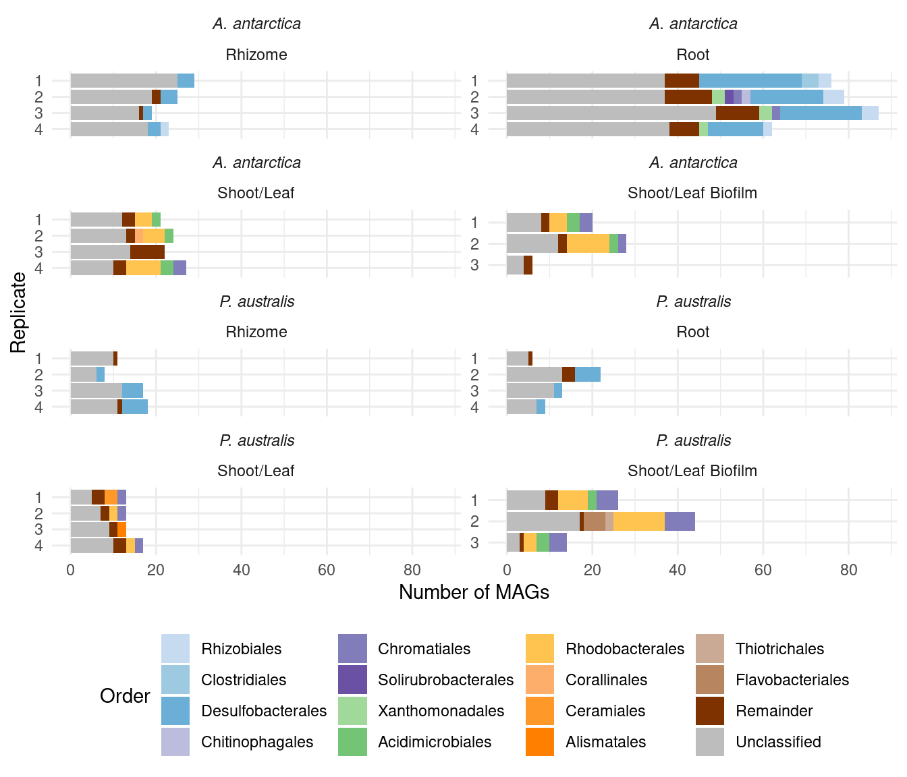
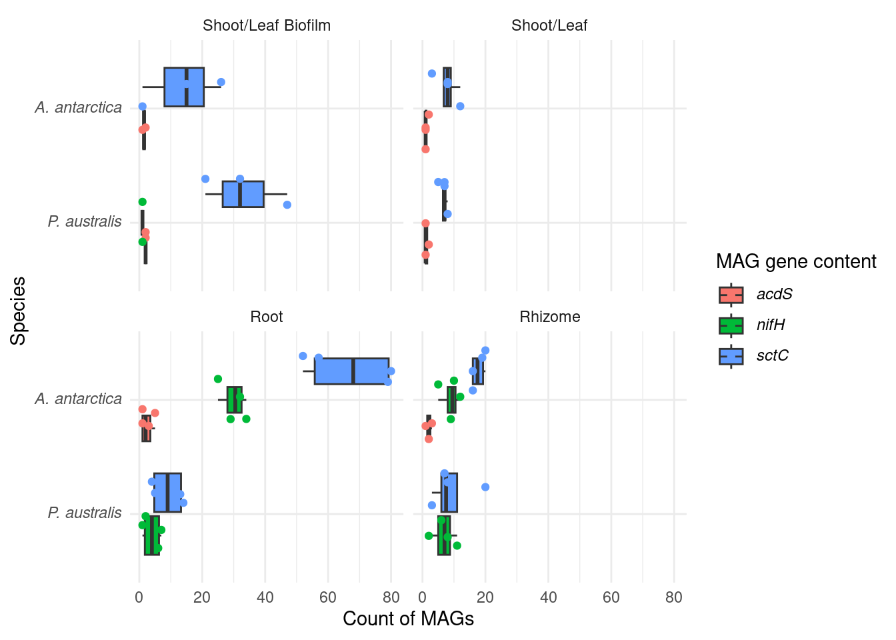

Visualising metagenome differences
Philipp Bayer
20th Nov 2023
Last updated: 2023-11-22
Checks: 6 1
Knit directory:
Amphibolis_Posidonia_Comparison/
This reproducible R Markdown analysis was created with workflowr (version 1.7.1). The Checks tab describes the reproducibility checks that were applied when the results were created. The Past versions tab lists the development history.
The R Markdown file has unstaged changes. To know which version of
the R Markdown file created these results, you’ll want to first commit
it to the Git repo. If you’re still working on the analysis, you can
ignore this warning. When you’re finished, you can run
wflow_publish to commit the R Markdown file and build the
HTML.
Great job! The global environment was empty. Objects defined in the global environment can affect the analysis in your R Markdown file in unknown ways. For reproduciblity it’s best to always run the code in an empty environment.
The command set.seed(20210414) was run prior to running
the code in the R Markdown file. Setting a seed ensures that any results
that rely on randomness, e.g. subsampling or permutations, are
reproducible.
Great job! Recording the operating system, R version, and package versions is critical for reproducibility.
Nice! There were no cached chunks for this analysis, so you can be confident that you successfully produced the results during this run.
Great job! Using relative paths to the files within your workflowr project makes it easier to run your code on other machines.
Great! You are using Git for version control. Tracking code development and connecting the code version to the results is critical for reproducibility.
The results in this page were generated with repository version c347565. See the Past versions tab to see a history of the changes made to the R Markdown and HTML files.
Note that you need to be careful to ensure that all relevant files for
the analysis have been committed to Git prior to generating the results
(you can use wflow_publish or
wflow_git_commit). workflowr only checks the R Markdown
file, but you know if there are other scripts or data files that it
depends on. Below is the status of the Git repository when the results
were generated:
Ignored files:
Ignored: .Rproj.user/
Ignored: renv/library/
Ignored: renv/staging/
Unstaged changes:
Modified: analysis/GO_and_ortho.Rmd
Modified: analysis/GOenrichment.Rmd
Modified: analysis/index.Rmd
Modified: analysis/metagenome.Rmd
Modified: data/Lost_present_gene_lists/Genes_only_in_Algae.txt
Modified: data/Lost_present_gene_lists/Genes_only_in_Aquatics_and_Seagrasses.txt
Modified: data/Lost_present_gene_lists/Genes_only_in_Aquatics_and_Seagrasses_and_Terrestrials.txt
Modified: data/Lost_present_gene_lists/Genes_only_in_Duckweeds.txt
Modified: data/Lost_present_gene_lists/Genes_only_in_Seagrasses.txt
Modified: data/Lost_present_gene_lists/Genes_only_in_Terrestrials.txt
Modified: data/Lost_present_gene_lists/Genes_union_of_Seagrass_and_Aquatics_union.txt
Modified: data/arabidopsis_gene_level_comparison.xlsx
Modified: data/arabidopsis_gene_level_comparison_only_losts.xlsx
Modified: data/arabidopsis_gene_level_counts.xlsx
Modified: output/GO_results_genes_in_Algae_NOT_Duckweeds_NOT_Seagrasses_NOT_Terrestrials.csv.png
Modified: output/GO_results_genes_in_Aquatics_NOT_Seagrasses_NOT_Terrestrials.csv.png
Modified: output/GO_results_genes_in_Aquatics_and_Seagrasses_NOT_Terrestrials.csv.png
Modified: output/GO_results_genes_in_Duckweeds_NOT_Algae_NOT_Seagrasses_NOT_Terrestrials.csv.png
Modified: output/GO_results_genes_in_Seagrasses_NOT_Algae_NOT_Duckweeds_NOT_Terrestrials.csv.png
Modified: output/GO_results_genes_in_Seagrasses_NOT_Aquatics_NOT_Terrestrials.csv.png
Modified: output/GO_results_genes_in_Terrestrials_NOT_Aquatics_NOT_Seagrasses.csv.png
Modified: output/GO_results_genes_in_all_seagrasses_vs_backgroundAll_intersect.csv.png
Modified: output/GO_results_genes_in_all_seagrasses_vs_backgroundAll_union.csv.png
Modified: output/GO_results_genes_in_all_seagrasses_vs_seagrassesBackground_intersect.csv.png
Modified: output/GO_results_genes_in_all_seagrasses_vs_seagrassesBackground_union.csv.png
Modified: output/GO_results_genes_lost_A_antarctica_not_other_seagrasses.csv.png
Modified: output/GO_results_genes_lost_P_australis_not_other_seagrasses.csv.png
Modified: output/GO_results_genes_lost_Z_marina_not_other_seagrasses.csv.png
Modified: output/GO_results_genes_lost_Z_muelleri_not_other_seagrasses.csv.png
Modified: output/GO_results_genes_only_P_australis_not_other_seagrasses.csv.png
Modified: output/GO_results_genes_only_Z_marina_not_other_seagrasses.csv.png
Modified: output/GO_results_genes_only_Z_muelleri_not_other_seagrasses.csv.png
Modified: output/GO_results_genes_union_Aquatics_and_Seagrasses_NOT_Terrestrials.csv.png
Modified: output/GO_results_terrestrials_vs_union_aquatics_seagrasses.png
Modified: output/Lost_GO_terms_in_five_species.PlantSpecific.xlsx
Modified: output/Lost_GO_terms_in_five_species.xlsx
Modified: output/Seagrasses_shared_lost_genes.xlsx
Modified: output/all_GO_plots.Rdata
Modified: output/group_venn_image.Rdata
Modified: output/seagrass_venn_image.Rdata
Staged changes:
Modified: output/patchwork_seagrass_gene_loss.png
Modified: output/patchwork_terrestrials_gene_loss.png
New: output/patchwork_terrestrials_seagrasses_gene_loss.png
Note that any generated files, e.g. HTML, png, CSS, etc., are not included in this status report because it is ok for generated content to have uncommitted changes.
These are the previous versions of the repository in which changes were
made to the R Markdown (analysis/metagenome.Rmd) and HTML
(docs/metagenome.html) files. If you’ve configured a remote
Git repository (see ?wflow_git_remote), click on the
hyperlinks in the table below to view the files as they were in that
past version.
| File | Version | Author | Date | Message |
|---|---|---|---|---|
| html | c347565 | Philipp Bayer | 2023-11-21 | Build site. |
| Rmd | 9229165 | Philipp Bayer | 2023-11-21 | dada |
| html | eda5f79 | Philipp Bayer | 2023-11-21 | Build site. |
| Rmd | 3f8f8ba | Philipp Bayer | 2023-11-21 | yay |
| Rmd | d151dcf | Philipp Bayer | 2023-11-21 | Add more t-tests |
| html | d151dcf | Philipp Bayer | 2023-11-21 | Add more t-tests |
| Rmd | 19de970 | Philipp Bayer | 2023-11-21 | add consistent color scheme for orders |
| html | 19de970 | Philipp Bayer | 2023-11-21 | add consistent color scheme for orders |
| Rmd | 1adc975 | Philipp Bayer | 2023-11-21 | Add the unclassified MAGs too |
| html | 1adc975 | Philipp Bayer | 2023-11-21 | Add the unclassified MAGs too |
| Rmd | aa839e6 | Philipp Bayer | 2023-11-21 | add missing ifles |
| html | aa839e6 | Philipp Bayer | 2023-11-21 | add missing ifles |
| Rmd | 52025b5 | Philipp Bayer | 2023-11-21 | Final figures and changes |
| html | 52025b5 | Philipp Bayer | 2023-11-21 | Final figures and changes |
| html | 1d2eef4 | Philipp Bayer | 2023-11-20 | Build site. |
| Rmd | 3ae555e | Philipp Bayer | 2023-11-20 | workflowr::wflow_publish(files = c("analysis/index.Rmd", "analysis/metagenome.Rmd")) |
| Rmd | b5757ac | Philipp Bayer | 2023-11-20 | Expand metagenome analysis |
| html | b5757ac | Philipp Bayer | 2023-11-20 | Expand metagenome analysis |
| Rmd | bf735ee | Philipp Bayer | 2023-11-20 | Add reformatted CAT for easier plotting |
| Rmd | f0e4ba7 | Philipp Bayer | 2023-11-20 | add metagenomics files. add renv. |
library(tidyverse)
library(DT)
library(microshades)
library(ggtext)
library(scales)
knitr::opts_knit$set(root.dir = rprojroot::find_rstudio_root_file())trunc_str <- function(latin_name) {
tmp <- str_split(latin_name, pattern = ' ')[[1]]
return(paste0(substring(tmp[1], 1, 1), '. ', tmp[2]))
}Here we compare metagenomes (taxonomy and genes) across Amphibolis vs the others.
metadata <- read_tsv('./data/metagenome/samples.tsv')Rows: 64 Columns: 4
── Column specification ────────────────────────────────────────────────────────
Delimiter: "\t"
chr (3): Sample, Species, Tissue
dbl (1): Replicate
ℹ Use `spec()` to retrieve the full column specification for this data.
ℹ Specify the column types or set `show_col_types = FALSE` to quiet this message.metadata <- metadata |> rename(Sample_species = Species,
Sample_replicate = Replicate) |>
mutate(Tissue = str_to_title(Tissue))Taxonomies
We have two taxonomies: one based on CAT, one based on GTDB. GTDB is less complete but more accurate. Let’s see what they look like.
GTDB
tax <- read_tsv('./data/metagenome/all_gtdb.summary.tsv.gz')Rows: 520 Columns: 20
── Column specification ────────────────────────────────────────────────────────
Delimiter: "\t"
chr (17): user_genome, classification, fastani_reference, fastani_reference_...
dbl (3): msa_percent, translation_table, red_value
ℹ Use `spec()` to retrieve the full column specification for this data.
ℹ Specify the column types or set `show_col_types = FALSE` to quiet this message.Need to put some extra work in; MAGs with no classification are not in the output file.
all_mag_counts <- read_tsv('./data/metagenome/MAG_counts.tsv') |> mutate(Sample = str_replace(Sample, '_L2', '')) |>
rename(TotalMAGs = MAGs)Rows: 64 Columns: 2
── Column specification ────────────────────────────────────────────────────────
Delimiter: "\t"
chr (1): Sample
dbl (1): MAGs
ℹ Use `spec()` to retrieve the full column specification for this data.
ℹ Specify the column types or set `show_col_types = FALSE` to quiet this message.clean_tax <- tax |>
separate(user_genome, into = c('sample', 'MAG'), sep='\\.') |>
separate(classification, into = c('domain', 'phylum',
'class', 'order',
'family', 'genus',
'species'), sep=';') |>
mutate(sample = str_replace_all(sample, 'MEGAHIT-', ''),
sample = str_replace_all(sample, '_L2', ''))
clean_tax <- clean_tax |> left_join(metadata, by = c('sample'='Sample'))Next, we keep only Posidonia australis and Amphibolis antarctica samples
amph_pos_tax <- clean_tax |> filter(Sample_species %in% c('Amphibolis antarctica', 'Posidonia australis')) |>
left_join(all_mag_counts, by = c('sample'='Sample'))GTDB by order
colors <-c(microshades_palette("micro_blue", 4, lightest = FALSE),
microshades_palette("micro_purple", 4, lightest = FALSE),
microshades_palette("micro_green", 4, lightest = FALSE),
microshades_palette("micro_orange", 4, lightest = FALSE),
microshades_palette("micro_brown", 4, lightest = FALSE),
microshades_palette("micro_gray", 4, lightest = FALSE))
names(colors) <- c("Rhizobiales", "Clostridiales", "Desulfobacterales", 'Desulfarculales', "Chitinophagales", "SBR1031", "Chromatiales", "Solirubrobacterales", "Xanthomonadales", "Acidimicrobiales", "Arenicellales","Granulosicoccales",
"Rhodobacterales", "Corallinales", "Ceramiales", "Alismatales",
"Thiotrichales", "Flavobacteriales", "UBA4575", "Remainder", "Unclassified")plot_orders_gtdb <- function(amph_pos_tax, group_remainder = TRUE, add_up=TRUE) {
temp <- amph_pos_tax |>
group_by(sample, Tissue, Sample_species,TotalMAGs) |>
mutate(Sample_species = trunc_str(Sample_species)) |>
mutate(Sample_species = paste0('*', Sample_species, '*')) |>
mutate(order = str_replace_all(order, 'o__','')) |>
count(order, .drop = FALSE)
if(group_remainder) {
temp <- temp |>
mutate(counted_orders = case_when(n == 1 ~ 'Remainder',
TRUE ~ order))
} else {
temp <- temp |>
mutate(counted_orders = order)
}
temp2 <- temp |>
select(-order) |>
group_by(sample, Tissue, Sample_species, n, counted_orders) |>
summarise(n = sum(n)) |>
filter(counted_orders != '' )
# we need to count the unclassified MAGs that are not in the output
group_presents <- temp2 |> group_by(sample) |> summarise(classifiedMAGs = sum(n))
missings <- group_presents |>
left_join(temp |>
select(sample, TotalMAGs)) |>
unique() |>
mutate(unclassifiedMAGs = TotalMAGs - classifiedMAGs) |>
select(-c(classifiedMAGs,TotalMAGs)) |>
rename(Unclassified = unclassifiedMAGs) |>
pivot_longer(-c(sample, Tissue, Sample_species)) |>
rename(counted_orders=name, n=value)
if(add_up){
# add hte missing numbers ot the main table
temp2 <-rbind(temp2, missings)
}
temp2 <- temp2 |> mutate(counted_orders = replace_na(counted_orders, 'Unclassified'))
uniques <- c(setdiff(unique(temp2$counted_orders), c('Unclassified', 'Remainder')), 'Remainder', 'Unclassified')
temp2 |>
mutate(counted_orders = factor(counted_orders, levels=uniques)) |>
mutate(sample = str_remove(sample, "[A-Z]+")) |>
mutate(sample = str_replace(sample, '31', '3')) |>
ggplot(aes(x = factor(sample, levels=rev(unique(sample))), y = n, fill=counted_orders)) +
geom_col() +
theme_minimal() +
facet_wrap(~Tissue+Sample_species, scales = 'free_y', ncol=2) +
coord_flip() +
ylab('Number of MAGs') + xlab('Replicate') +
labs(fill = 'Order') +
scale_y_continuous(breaks=pretty_breaks()) +
# move legend position to bottom
theme(legend.position = "bottom",
strip.text.x = element_markdown()) +
scale_fill_manual(values = colors)
}
plot_orders_gtdb(amph_pos_tax)`summarise()` has grouped output by 'sample', 'Tissue', 'Sample_species', 'n'.
You can override using the `.groups` argument.
Adding missing grouping variables: `Tissue`, `Sample_species`
Joining with `by = join_by(sample)`
GTDB by family
amph_pos_tax |>
group_by(sample, Tissue) |>
mutate(family = str_replace_all(family, 'f__','')) |>
count(family) |>
filter ( n > 1) |>
filter(family != '' ) |>
ggplot(aes(x = sample, y = n, fill=family)) +
geom_col() +
theme_minimal() +
#theme(axis.text.x = element_text(angle = 90, hjust = 1)) +
facet_wrap(~Tissue) + coord_flip() +
ylab('Number of contigs') + xlab('Sample')
amph_pos_tax |> group_by(sample, species) |> filter(species != 's__') |>
count(species)# A tibble: 0 × 3
# Groups: sample, species [0]
# ℹ 3 variables: sample <chr>, species <chr>, n <int>CAT
Let’s do the same using CAT
tax_cat <- read_tsv('./data/metagenome/all_cat.summary.reformatted.tsv.gz')Warning: One or more parsing issues, call `problems()` on your data frame for details,
e.g.:
dat <- vroom(...)
problems(dat)Rows: 1454 Columns: 12
── Column specification ────────────────────────────────────────────────────────
Delimiter: "\t"
chr (10): # bin, classification, lineage, lineage scores, Superkingdom, Clas...
dbl (2): number of ORFs in bin, number of ORFs classification is based on
ℹ Use `spec()` to retrieve the full column specification for this data.
ℹ Specify the column types or set `show_col_types = FALSE` to quiet this message.clean_tax_cat <- tax_cat |>
separate(`# bin`, into = c('sample', 'MAG', 'fa'), sep='\\.') |>
mutate(sample = str_replace_all(sample, 'MEGAHIT-', ''),
sample = str_replace_all(sample, '_L2', '')) |>
select(-fa)
clean_tax_cat <- clean_tax_cat |> left_join(metadata, by = c('sample'='Sample')) |> left_join(all_mag_counts, by =c('sample'='Sample'))Next, we keep only Posidonia australis and Amphibolis antarctica samples
amph_pos_tax_cat <- clean_tax_cat |> filter(Sample_species %in% c('Amphibolis antarctica', 'Posidonia australis'))CAT by order
plot_orders_cat <-
function(amph_pos_tax_cat, group_remainder = TRUE) {
temp <- amph_pos_tax_cat |>
separate(Order, into = c('Order', 'Order_score')) |>
rename(order = Order) |>
group_by(sample, Tissue, Sample_species, TotalMAGs) |>
mutate(Sample_species = trunc_str(Sample_species)) |>
mutate(Sample_species = paste0('*', Sample_species, '*')) |>
count(order)
if (group_remainder) {
temp <- temp |>
mutate(counted_orders = case_when(n == 1 ~ 'Remainder',
TRUE ~ order))
} else {
temp <- temp |>
mutate(counted_orders = order)
}
temp2 <- temp |>
select(-order) |>
group_by(sample, Tissue, Sample_species, n, counted_orders,TotalMAGs) |>
summarise(n = sum(n)) |>
filter(counted_orders != '')
# we need to count the unclassified MAGs that are not in the output
group_presents <- temp2 |> group_by(sample) |> summarise(classifiedMAGs = sum(n))
missings <- group_presents |>
left_join(temp2) |>
select(classifiedMAGs, Tissue, Sample_species, sample, TotalMAGs)|>
unique() |>
mutate(unclassifiedMAGs = TotalMAGs - classifiedMAGs) |>
select(-c(classifiedMAGs,TotalMAGs)) |>
rename(Unclassified = unclassifiedMAGs) |>
pivot_longer(-c(sample, Tissue, Sample_species)) |>
rename(counted_orders=name, n=value)
temp2 <-rbind(temp2, missings)
uniques <- c(setdiff(unique(temp2$counted_orders), c('Unclassified', 'Remainder')), 'Remainder', 'Unclassified')
temp2 |>
mutate(counted_orders = factor(counted_orders, levels = uniques)) |>
mutate(sample = str_remove(sample, "[A-Z]+")) |>
mutate(sample = str_replace(sample, '31', '3')) |>
ggplot(aes(
x = factor(sample, levels = rev(unique(sample))),
y = n,
fill = counted_orders
)) +
geom_col() +
theme_minimal() +
facet_wrap( ~ Sample_species + Tissue, ncol = 2, scales = 'free_y') +
coord_flip() +
ylab('Number of MAGs') + xlab('Replicate') +
labs(fill = 'Order') +
scale_y_continuous(breaks = pretty_breaks()) +
# move legend position to bottom
theme(legend.position = "bottom",
strip.text.x = element_markdown()) +
scale_fill_manual(values = colors)
}
plot_orders_cat(amph_pos_tax_cat)Warning: Expected 2 pieces. Additional pieces discarded in 345 rows [1, 2, 3, 4, 5, 7,
8, 11, 13, 14, 15, 17, 22, 25, 26, 27, 29, 30, 33, 34, ...].`summarise()` has grouped output by 'sample', 'Tissue', 'Sample_species', 'n',
'counted_orders'. You can override using the `.groups` argument.
Joining with `by = join_by(sample)`
CAT by family
amph_pos_tax_cat |>
separate(Family, into = c('Family', 'Family_score')) |>
group_by(sample, Tissue) |>
count(Family) |>
filter ( n > 1) |>
filter(Family != '' ) |>
ggplot(aes(x = sample, y = n, fill=Family)) +
geom_col() +
theme_minimal() +
#theme(axis.text.x = element_text(angle = 90, hjust = 1)) +
facet_wrap(~Tissue) + coord_flip() +
ylab('Number of contigs') + xlab('Sample')Warning: Expected 2 pieces. Additional pieces discarded in 178 rows [3, 4, 5, 26, 29,
30, 33, 47, 56, 75, 79, 81, 82, 84, 88, 92, 93, 95, 97, 101, ...].
amph_pos_tax_cat |> separate(Species, into = c('Species', 'Species_score'), sep =':') |> filter(!is.na(Species)) |> group_by(sample, Species) |>
count(Species)# A tibble: 68 × 3
# Groups: sample, Species [68]
sample Species n
<chr> <chr> <int>
1 AR1 Acidihalobacter ferrooxydans 1
2 AR1 Deltaproteobacteria bacterium 1
3 AR1 Desulfobacterales bacterium 1
4 AR1 Gammaproteobacteria bacterium 1
5 AR1 Solirubrobacterales bacterium 70-9 1
6 AR1 Spirochaetaceae bacterium 4572_59 1
7 AR2 Acidihalobacter ferrooxydans 1
8 AR2 Desulfobacterales bacterium 1
9 AR2 Flammeovirgaceae bacterium 1
10 AR2 Gammaproteobacteria bacterium 2
# ℹ 58 more rowsamph_pos_tax_cat |> separate(Species, into = c('Species', 'Species_score'), sep =':') |> filter(!is.na(Species)) |> group_by(sample, Species) |>
count(Species) |> filter(str_detect(Species, 'Acidihalobacter'))# A tibble: 4 × 3
# Groups: sample, Species [4]
sample Species n
<chr> <chr> <int>
1 AR1 Acidihalobacter ferrooxydans 1
2 AR2 Acidihalobacter ferrooxydans 1
3 AR3 Acidihalobacter ferrooxydans 1
4 AR4 Acidihalobacter ferrooxydans 1There we go :) Which MAGs are those?
amph_pos_tax_cat |> filter(str_detect(Species, 'Acidihalobacter')) |> select(-c(lineage, `lineage scores`)) |> datatable()amph_pos_tax_cat |> filter(str_detect(Family, 'Ectothiorhodospiraceae'))|> select(-c(lineage, `lineage scores`)) |> datatable()Are these in the GTDB classification?
amph_pos_tax |> filter(str_detect(family, 'Ectothiorhodospiraceae'))|> nrow()[1] 0Nope!
Gene comparison
Let’s compare gene presence/absence by names first
genes <- read_tsv('././data/metagenome/no_hypothetical.all_genes.tsv.gz')Rows: 1362907 Columns: 8
── Column specification ────────────────────────────────────────────────────────
Delimiter: "\t"
chr (8): filename, locus_tag, ftype, length_bp, gene, EC_number, COG, product
ℹ Use `spec()` to retrieve the full column specification for this data.
ℹ Specify the column types or set `show_col_types = FALSE` to quiet this message.genes <- genes |>
separate(filename, into = c('sample', 'MAG'), sep='\\.', extra = 'drop') |> # get rid of extra filenaming stuff
mutate(sample = str_replace(sample, 'MEGAHIT-', '')) |>
separate(MAG, into = c('MAG', 'rest'), sep ='/') |>
select(-rest)Warning: Expected 2 pieces. Missing pieces filled with `NA` in 1443 rows [2106, 4306,
7036, 7144, 7539, 10011, 12436, 12584, 13618, 17164, 17303, 19074, 21967,
22288, 28457, 30064, 32221, 32315, 34439, 34480, ...].genessplit <- genes |> separate(gene, into = c('gene', 'gene_copy_number'), sep='_')Warning: Expected 2 pieces. Missing pieces filled with `NA` in 692502 rows [2, 3, 5, 6,
7, 10, 12, 13, 14, 15, 17, 18, 25, 26, 30, 31, 33, 35, 36, 37, ...].genessplit <- genessplit |> mutate(sample = str_replace(sample, '_L2', '')) |>
left_join(metadata, by = c('sample'='Sample')) |>
filter(Sample_species %in% c('Amphibolis antarctica', 'Posidonia australis'))count_diffs <- genessplit |>
group_by(Sample_species, gene) |>
count(gene) |>
pivot_wider(names_from = Sample_species, values_from = n) |>
mutate(difference = `Amphibolis antarctica` - `Posidonia australis`) |>
arrange(desc(difference))count_diffs |> filter(`Posidonia australis` <100) |> head() |> datatable()Eeeh this is too unspecific. Let’s look into specific differences.
ACC deaminase
We hypothesise that the ACC precursor-existing genes in Amphibolis lead to different microbiomes. ACC is broken down by ACC deaminases, which are present in Amphibolis but not Posidonia. Let’s see if we can find ACC deaminases in the metagenomes (acdS).
genessplit |> filter(gene == 'acdS') |>
group_by(Sample_species, Tissue, Sample_replicate) |>
count(gene) |>
mutate(Sample_species = trunc_str(Sample_species)) |>
mutate(Sample_species = paste0('*', Sample_species, '*')) |>
ggplot(aes(x= interaction(factor(Sample_replicate, levels=4:1), Tissue), y = n, fill = Sample_species)) +
geom_col() +
facet_wrap(~Sample_species) +
coord_flip()+ theme_minimal() +
scale_y_continuous(breaks=pretty_breaks()) +
ylab('Total number of *acdS*-containing MAGs') +
xlab('Sample species') +
theme(legend.position = 'none',
strip.text.x = element_markdown(),
axis.title.x = element_markdown())
| Version | Author | Date |
|---|---|---|
| 1adc975 | Philipp Bayer | 2023-11-21 |
What are those acdS-containing MAGs?
genessplit |> filter(gene == 'acdS') |> left_join(amph_pos_tax, by=c('sample', 'MAG'), multiple = 'any') |> datatable()Lots of unknown taxonomies :(
TODO: The unknowns should have a color!!
genessplit |> filter(gene == 'acdS') |> left_join(amph_pos_tax, by=c('sample', 'MAG')) |>
select(-c(Tissue.y, Sample_species.y)) |>
rename(Tissue = Tissue.x, Sample_species = Sample_species.x) |>
mutate(order = replace_na(order, 'Unclassified')) |>
plot_orders_gtdb(group_remainder = FALSE, add_up = FALSE)`summarise()` has grouped output by 'sample', 'Tissue', 'Sample_species', 'n'.
You can override using the `.groups` argument.
Adding missing grouping variables: `Tissue`, `Sample_species`
Joining with `by = join_by(sample)`
#select(sample, MAG, domain:species)genessplit |> filter(gene == 'acdS') |>
left_join(amph_pos_tax_cat, by=c('sample', 'MAG')) |>
select(-c(Tissue.y, Sample_species.y)) |>
rename(Tissue = Tissue.x, Sample_species = Sample_species.x) |>
plot_orders_cat(group_remainder = FALSE) #Warning: Expected 2 pieces. Additional pieces discarded in 19 rows [1, 7, 8, 12, 16, 17,
18, 20, 21, 22, 23, 24, 25, 26, 27, 28, 29, 30, 31].`summarise()` has grouped output by 'sample', 'Tissue', 'Sample_species', 'n',
'counted_orders'. You can override using the `.groups` argument.
Joining with `by = join_by(sample)`
#select(sample, MAG, Superkingdom:Species) |> Let’s chekc for nitrogen fixation genes (nif) - hypothesis is that Amphibolis roots contain more of these
genessplit |> filter(str_detect(gene, 'nifH') | str_detect(gene, 'acdS') | str_detect(gene, 'sctC')) |>
mutate(gene_class = case_when(str_detect(gene, 'nifH') ~ '*nifH*',
str_detect(gene, 'acdS') ~ '*acdS*',
str_detect(gene, 'sctC') ~ '*sctC*')) |>
#group_by(Sample_species, Tissue, Sample_replicate, MAG) |>
#summarise(gene_class = paste0(sort(unique(gene_class)), collapse = ' & ')) |>
group_by(Sample_species, Tissue, Sample_replicate) |>
count(gene_class) |>
mutate(Sample_species = trunc_str(Sample_species)) |>
mutate(Sample_species = paste0('*', Sample_species, '*')) |>
ggplot(aes(x=factor(Sample_species, levels=rev(c(unique(Sample_species)))), y=n, fill=gene_class)) +
geom_boxplot(outlier.shape = NA) +
facet_wrap(~factor(Tissue, levels=rev(c(unique(Tissue))))) +
geom_point(position = position_jitterdodge(), aes(color=gene_class)) +
coord_flip() +
theme_minimal() +
labs(color='MAG gene content', fill='MAG gene content') +
theme(axis.text.y = element_markdown(),legend.text = element_markdown()) +
ylab('Count of MAGs') + xlab('Species')
genessplit |> filter(str_detect(gene, 'nifH') | str_detect(gene, 'acdS') | str_detect(gene, 'sctC')) |>
mutate(gene_class = case_when(str_detect(gene, 'nifH') ~ '*nifH*',
str_detect(gene, 'acdS') ~ '*acdS*',
str_detect(gene, 'sctC') ~ '*sctC*')) |>
group_by(Sample_species, Tissue, Sample_replicate) |>
count(gene_class) |>
mutate(Sample_species = trunc_str(Sample_species)) |>
mutate(Sample_species = paste0('*', Sample_species, '*')) |>
ggplot(aes(x=factor(Tissue, levels=rev(c('Shoot/Leaf', 'Shoot/Leaf Biofilm', 'Rhizome', 'Root'))), y=n, fill=Sample_species)) +
geom_boxplot(outlier.shape = NA) +
facet_wrap(~factor(gene_class, levels=c('*acdS*', '*nifH*', '*sctC*')), scales = 'free_x') +
geom_point(position = position_jitterdodge(), aes(color=Sample_species)) +
coord_flip() +
theme_minimal() +
labs(color='Host species', fill='Host species') +
theme(axis.text.y = element_markdown(),
legend.text = element_markdown(),
strip.text.x = element_markdown()) +
ylab('Count of MAGs') +
xlab('Tissue')
I like this one more. The differences are stronger.
Statistic test
Can we make a simple association test?
First, a general one:
tmp <- genessplit |> filter(str_detect(gene, 'nifH') | str_detect(gene, 'acdS') | str_detect(gene, 'sctC')) |>
mutate(gene_class = case_when(str_detect(gene, 'nifH') ~ '*nifH*',
str_detect(gene, 'acdS') ~ '*acdS*',
str_detect(gene, 'sctC') ~ '*sctC*')) |>
group_by(Sample_species, Sample_replicate, Tissue) |>
count(gene_class) |>
mutate(Sample_species = factor(Sample_species, levels = c('Posidonia australis', 'Amphibolis antarctica')))
summary(lm(n ~ gene_class + Sample_species + Sample_replicate + Tissue, data=tmp))
Call:
lm(formula = n ~ gene_class + Sample_species + Sample_replicate +
Tissue, data = tmp)
Residuals:
Min 1Q Median 3Q Max
-25.496 -7.571 -1.483 4.858 44.164
Coefficients:
Estimate Std. Error t value Pr(>|t|)
(Intercept) -7.1173 6.5738 -1.083 0.28343
gene_class*nifH* 8.7515 5.1233 1.708 0.09295 .
gene_class*sctC* 20.1394 4.1926 4.804 1.14e-05 ***
Sample_speciesAmphibolis antarctica 10.1763 3.5162 2.894 0.00535 **
Sample_replicate -0.6348 1.5468 -0.410 0.68300
TissueRoot 13.5423 4.3568 3.108 0.00291 **
TissueShoot/Leaf -3.0185 5.0868 -0.593 0.55523
TissueShoot/Leaf Biofilm 5.2019 5.2435 0.992 0.32528
---
Signif. codes: 0 '***' 0.001 '**' 0.01 '*' 0.05 '.' 0.1 ' ' 1
Residual standard error: 13.59 on 58 degrees of freedom
Multiple R-squared: 0.4475, Adjusted R-squared: 0.3809
F-statistic: 6.712 on 7 and 58 DF, p-value: 7.885e-06OK! So we have an association with gene_class, which is obvious, but we also have an association with species (great!) and root-tissue (also great!)
Subtests
Now let’s make the specific ones; nifh, acdS, and sctC counts within Tissue=root across both species
nifH
tmp <- genessplit |> filter(str_detect(gene, 'nifH') & str_detect(Tissue, 'Root')) |>
mutate(gene_class = case_when(str_detect(gene, 'nifH') ~ 'nifH')) |>
group_by(Sample_species, Sample_replicate) |> count(gene_class)
tmp |> datatable()t.test(n ~ Sample_species, data=tmp)
Welch Two Sample t-test
data: n by Sample_species
t = 10.614, df = 5.5702, p-value = 6.634e-05
alternative hypothesis: true difference in means between group Amphibolis antarctica and group Posidonia australis is not equal to 0
95 percent confidence interval:
19.8924 32.1076
sample estimates:
mean in group Amphibolis antarctica mean in group Posidonia australis
30 4 P < 0.0005
sctC
tmp <- genessplit |> filter(str_detect(gene, 'sctC') & str_detect(Tissue, 'Root')) |>
mutate(gene_class = case_when(str_detect(gene, 'sctC') ~ 'sctC')) |>
group_by(Sample_species, Sample_replicate) |> count(gene_class)
tmp |> datatable()t.test(n ~ Sample_species, data=tmp)
Welch Two Sample t-test
data: n by Sample_species
t = 7.4878, df = 3.7586, p-value = 0.002169
alternative hypothesis: true difference in means between group Amphibolis antarctica and group Posidonia australis is not equal to 0
95 percent confidence interval:
35.93797 80.06203
sample estimates:
mean in group Amphibolis antarctica mean in group Posidonia australis
67 9 p < 0.005
acdS
tmp <- genessplit |> filter(str_detect(gene, 'acdS') & str_detect(Tissue, 'Root')) |>
mutate(gene_class = case_when(str_detect(gene, 'acdS') ~ 'acdS')) |>
group_by(Sample_species, Sample_replicate) |> count(gene_class)
tmp |> datatable()can’t run t-test, only one group present!
# t.test(n ~ Sample_species, data=tmp)
sessionInfo()R version 4.3.2 (2023-10-31)
Platform: x86_64-pc-linux-gnu (64-bit)
Running under: Ubuntu 20.04.6 LTS
Matrix products: default
BLAS: /usr/lib/x86_64-linux-gnu/blas/libblas.so.3.9.0
LAPACK: /usr/lib/x86_64-linux-gnu/lapack/liblapack.so.3.9.0
locale:
[1] LC_CTYPE=en_AU.UTF-8 LC_NUMERIC=C
[3] LC_TIME=en_AU.UTF-8 LC_COLLATE=en_AU.UTF-8
[5] LC_MONETARY=en_AU.UTF-8 LC_MESSAGES=en_AU.UTF-8
[7] LC_PAPER=en_AU.UTF-8 LC_NAME=C
[9] LC_ADDRESS=C LC_TELEPHONE=C
[11] LC_MEASUREMENT=en_AU.UTF-8 LC_IDENTIFICATION=C
time zone: Australia/Perth
tzcode source: system (glibc)
attached base packages:
[1] stats graphics grDevices datasets utils methods base
other attached packages:
[1] scales_1.2.1 ggtext_0.1.2 microshades_1.11 DT_0.30
[5] lubridate_1.9.2 forcats_1.0.0 stringr_1.5.0 dplyr_1.1.2
[9] purrr_1.0.1 readr_2.1.4 tidyr_1.3.0 tibble_3.2.1
[13] ggplot2_3.4.2 tidyverse_2.0.0 workflowr_1.7.1
loaded via a namespace (and not attached):
[1] gtable_0.3.3 xfun_0.39 bslib_0.4.2
[4] htmlwidgets_1.6.2 processx_3.8.1 callr_3.7.3
[7] tzdb_0.4.0 crosstalk_1.2.0 vctrs_0.6.2
[10] tools_4.3.2 ps_1.7.5 generics_0.1.3
[13] parallel_4.3.2 fansi_1.0.4 highr_0.10
[16] pkgconfig_2.0.3 lifecycle_1.0.3 farver_2.1.1
[19] compiler_4.3.2 git2r_0.32.0 munsell_0.5.0
[22] getPass_0.2-2 httpuv_1.6.11 htmltools_0.5.5
[25] sass_0.4.6 yaml_2.3.7 crayon_1.5.2
[28] later_1.3.1 pillar_1.9.0 jquerylib_0.1.4
[31] whisker_0.4.1 ellipsis_0.3.2 cachem_1.0.8
[34] commonmark_1.9.0 tidyselect_1.2.0 digest_0.6.31
[37] stringi_1.7.12 labeling_0.4.2 cowplot_1.1.1
[40] rprojroot_2.0.3 fastmap_1.1.1 grid_4.3.2
[43] colorspace_2.1-0 cli_3.6.1 magrittr_2.0.3
[46] utf8_1.2.3 withr_2.5.0 promises_1.2.0.1
[49] bit64_4.0.5 timechange_0.2.0 rmarkdown_2.21
[52] httr_1.4.6 bit_4.0.5 hms_1.1.3
[55] evaluate_0.21 knitr_1.42 markdown_1.11
[58] rlang_1.1.1 gridtext_0.1.5 Rcpp_1.0.10
[61] glue_1.6.2 BiocManager_1.30.20 xml2_1.3.4
[64] renv_1.0.2 rstudioapi_0.14 vroom_1.6.3
[67] jsonlite_1.8.4 R6_2.5.1 fs_1.6.2